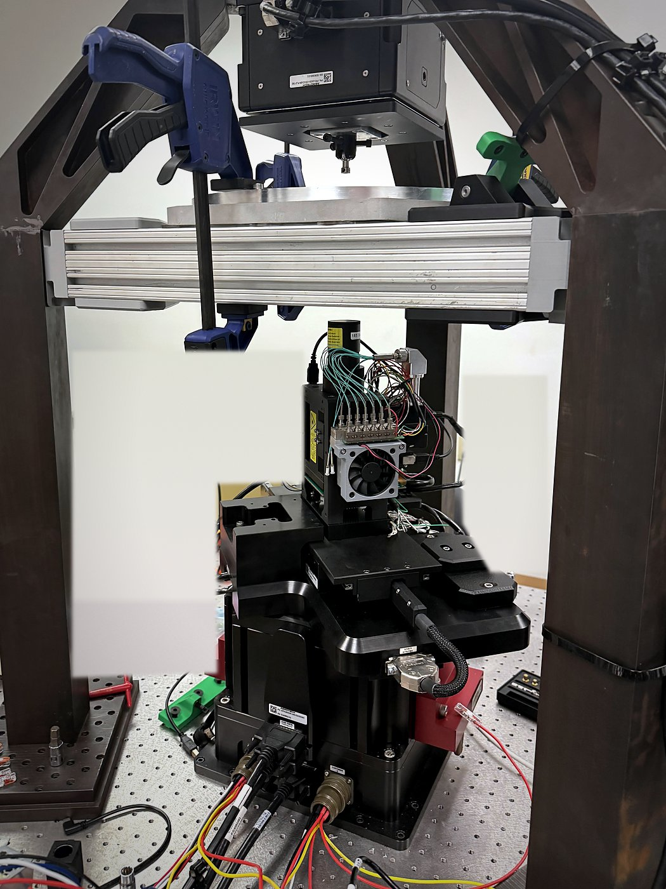

Custom DLP printer for printing chip interconnects
Advanced packaging needs fine metal wiring (redistribution layers) between chips. I'm building a digital light processing printer from scratch to print those structures with conductive resins.
- BUILT
- Designed the printer in SolidWorks, machined parts in-house, measured flatness with a CMM, and wrote tip/tilt correction code to level the build platform.
- MATERIALS
- Worked on silver/acrylate photopolymer resins for printing interconnects.
- MODELING
- Modeled the light-curing chemistry and trained a PyTorch model that predicts print resolution from exposure dose, development time, and composition, then used it to find recipes with fewer defects.
SolidWorksMachiningCMM metrologyPython / PyTorch